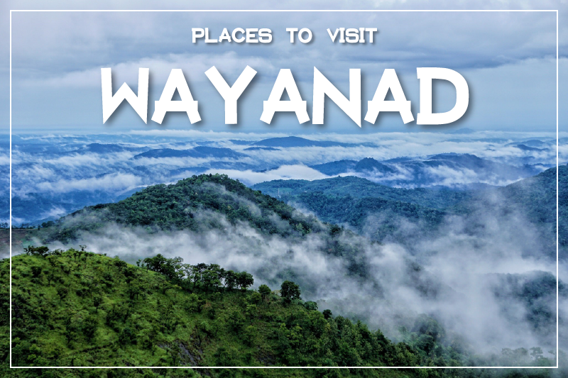
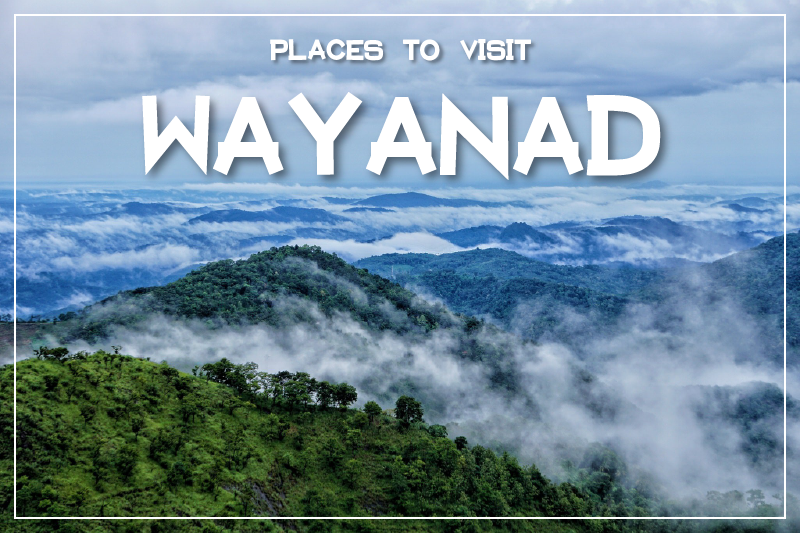
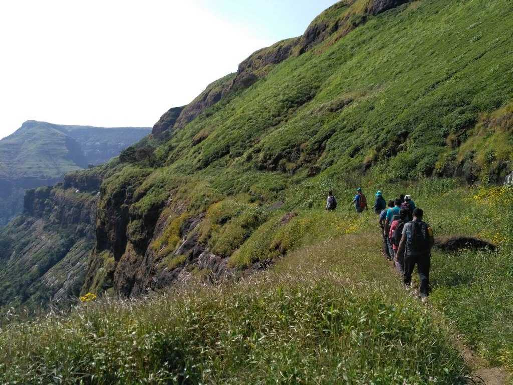
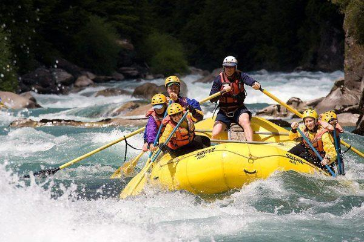
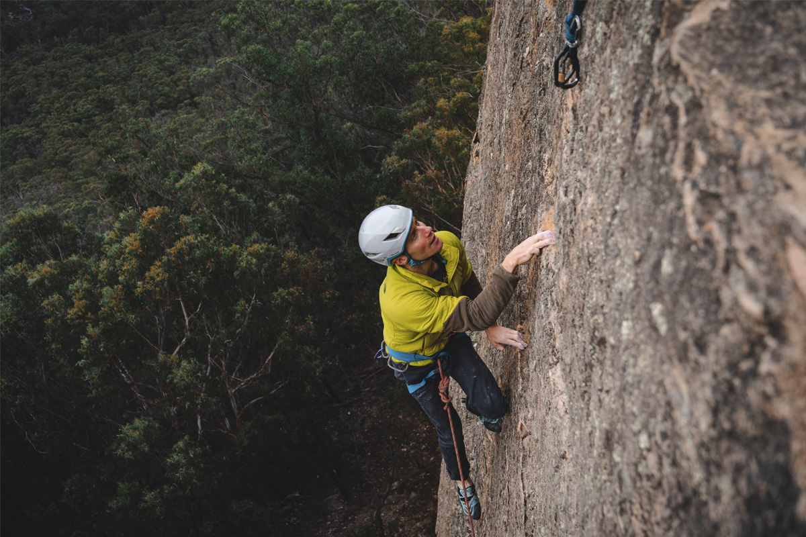
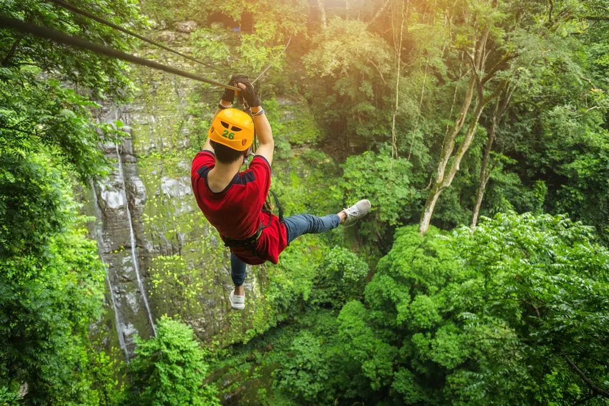
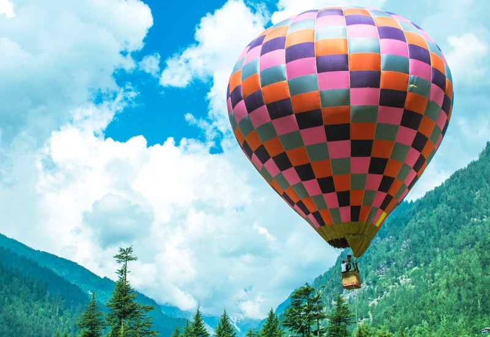
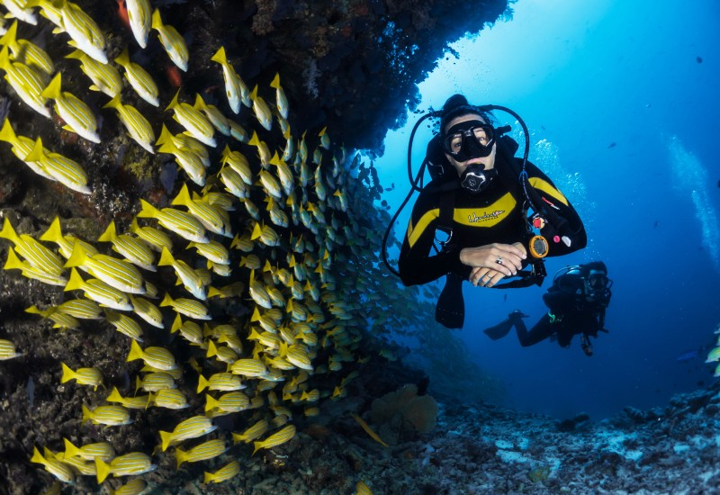

About Kerala
Kerala, fondly known as 'God's Own Country', offers stunning landscapes with its backwaters, hills, beaches, and rich traditions. The state's blend of culture, nature, and history makes it a must-visit destination.
History of Kerala
Kerala is first mentioned (as Keralaputra) in a 3rd-century-bce rock inscription left by the
Mauryan
emperor Ashoka. In the last centuries bce this region became famous among the Greeks and Romans for
its spices (especially pepper).
During the first five centuries ce the region was a part of Tamilakam—the territory of the
Tamils—and thus was sometimes partially controlled by the eastern Pandya and Chola dynasties, as
well as by the Cheras. In the 1st century Jewish immigrants arrived, and, according to local
Christian tradition, St. Thomas the Apostle visited Kerala in the same.
Much of Kerala’s history from the 6th to the 8th century is obscure, but it is known that Arab
traders introduced Islam later in the period. Under the Kulashekhara dynasty (c. 800–1102),
Malayalam emerged as a distinct language, and Hinduism became prominent.
The Cholas often controlled Kerala during the 11th and 12th centuries. By the beginning of the 14th
century, Ravi Varma Kulashekhara of the Venad kingdom established a short-lived supremacy over
southern India. After his death, Kerala became a conglomeration of warring chieftaincies, among
which the most important were Calicut (now Kozhikode) in the north and Venad in the south.
The era of foreign intervention began in 1498, when Vasco da Gama landed near Calicut. In the 16th
century the Portuguese superseded the Arab traders and dominated the commerce of the Malabar Coast.
Their attempt to establish sovereignty was thwarted by the zamorin (hereditary ruler) of
Calicut.
The Dutch ousted the Portuguese in the 17th century. Marthanda Varma ascended the Venad throne in
1729 and crushed Dutch expansionist designs at the ,Battle of Kolachel 12 years later. Marthanda
Varma then adopted a European mode of martial discipline and expanded the Venad domain to encompass
what became the southern state of Travancore.
His alliance in 1757 with the raja of the central state of Cochin (Kochi), against the zamorin,
enabled Cochin to survive. By 1806, however, Cochin and Travancore, as well as the Malabar Coast in
the north, had become subject states under the British Madras Presidency.
Two years after India’s independence was achieved in 1947, Cochin and Travancore were united as
Travancore-Cochin state. The present state of Kerala was constituted on a linguistic basis in 1956
when the Malabar Coast and the Kasargod taluka (administrative subdivision) of South Kanara
were
added to Travancore-Cochin.
The southern portion of the former Travancore-Cochin state was attached to Tamil Nadu.
Top Tourist Attractions
Athirappilly Waterfalls
Athirappilly Waterfalls in Kerala, India, is a stunning 80-foot cascade on the Chalakudy River.
Munnar
Explore tea plantations and mist-covered hills in this serene hill station.
Varkala Beach
Relax on the golden sands of one of India's most beautiful beaches.
Gallery

 

Adventure Sports in Kerala To Challenge Your Adventurous Souls!
1. Parasailing - Fly Above The Mighty Sea

Parasailing is an exhilarating adventure sport that lets you soar high above the water while being
towed by a boat. Kerala, with its stunning coastline and tranquil beaches, offers some of the best
parasailing experiences in India. Beaches like Varkala, Kovalam, and Alappuzha are popular spots for
parasailing, where adventurers can enjoy a bird’s-eye view of the Arabian Sea, coconut palms, and
scenic landscapes.
The thrill of parasailing in Kerala combines the excitement of flight with the serenity of its
coastal beauty. The calm and steady winds along the Arabian Sea coast create ideal conditions for
parasailing, making it a safe and enjoyable experience for both beginners and seasoned
thrill-seekers.
2. Trekking in the Western Ghats

Tekking in the Western Ghats offers a rich blend of natural beauty, biodiversity, and adventure. The
Ghats, a UNESCO World Heritage site, span several states along India's western coast, featuring a
variety of terrains, including tropical rainforests, grasslands, and high-altitude plateaus.
Trekkers can explore lush forests, rolling hills, and picturesque waterfalls while encountering
diverse flora and fauna, many of which are unique to this region.
The trails vary in difficulty, making the Western Ghats ideal for both novice and experienced
trekkers. Cultural interactions with local communities enhance the trekking experience, offering a
glimpse into traditional lifestyles. The best time to trek is typically from October to March, when
the weather is cooler and more favorable for outdoor activities.
3. White Water Rafting in Kundala

Within these adventure activities destinations in Kerala, Get your adrenaline pumping with a whitewater rafting expedition in Kundala. Navigate through thrilling rapids and swirling waters as you conquer the gushing currents of Kerala’s rivers. With experienced guides leading the way, this exhilarating adventure promises an adrenaline-fueled experience amidst the stunning natural beauty of Kundala.
4. Rock Climbing in Munnar

Challenge yourself with a rock climbing expedition amidst the stunning landscapes of Munnar. Scale towering cliffs and rocky outcrops as you test your strength and agility against nature’s elements. With experienced guides and safety equipment provided, rock climbing in Munnar promises an exhilarating adventure for climbers of all skill levels. This is listed as one of the coolest places for adventure activities in Kerala. Nothing can beat rock climbing at Munnar to is one of the most thrilling activities in Kerala.
5. Zip Lining at Thenmala Eco-Tourism Zone

Experience the thrill of zip lining amidst the pristine surroundings of the Thenmala Eco-Tourism Zone. Soar through the treetops at high speeds, enjoying panoramic views of the lush greenery below. With trained instructors and safety measures in place, zip lining at Thenmala promises an adrenaline-pumping adventure for nature lovers and thrill-seekers alike. This is listed as one of the coolest places for adventure activities in Kerala.
6. Hot Air Ballooning in Vagamon

Within these adventure activities destinations in Kerala, Soar high above the scenic landscapes of Vagamon with a hot air ballooning adventure. Drift peacefully through the sky, enjoying breathtaking views of Kerala’s lush greenery and rolling hills below. Whether you’re a thrill-seeker or a nature lover, hot air ballooning in Vagamon promises a memorable experience amidst the clouds. This is listed as one of the coolest places for adventure activities in Kerala. This is a must for Outdoor activities in Kerala.
7. Scuba Diving in Kovalam

Scuba diving in Kovalam is an adventurous underwater exploration where participants dive beneath the
surface using a self-contained breathing apparatus (scuba) to observe and interact with marine life.
The activity is conducted in the calm, clear waters of Kovalam's beaches, particularly around
Lighthouse Beach, which is known for its vibrant coral reefs and diverse aquatic species.
Dive centers in Kovalam provide both training sessions for beginners and more challenging dives for
experienced divers. The diving experience typically involves guided tours, safety briefings, and the
use of professional diving gear, allowing divers to discover the beauty of the Arabian Sea's
underwater ecosystem.